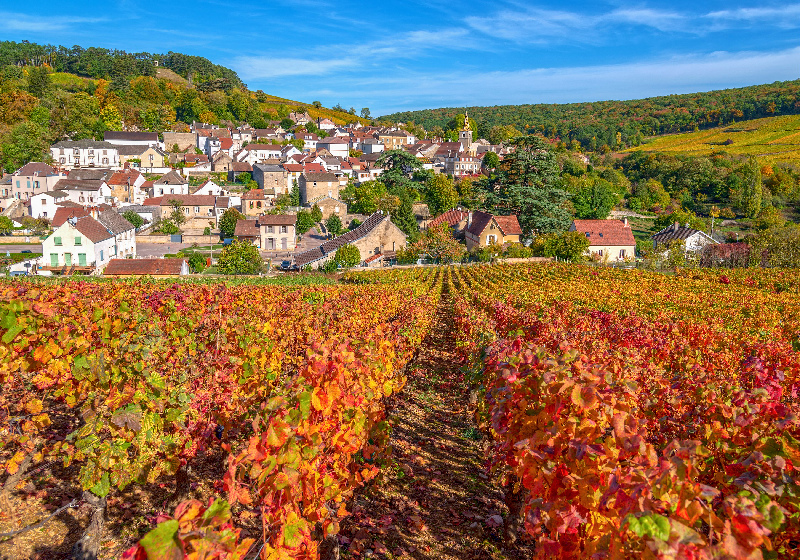

Available Itineraries

Colors of Provence
Delight your senses on a journey through France's culinary and artistic heart. Begin in Lyon, the gourmet capital, and savor wines from Beaujolais to Côtes du Rhône. Hunt for truffles, pair fine chocolate with wine, and explore Avignon's UNESCO treasures. In Arles, walk in the footsteps of Van Gogh and Picasso amid timeless Provençal charm.
Learn More
Flavors of Burgundy
Treat your senses to the rich flavors of Burgundy on an indulgent voyage through France's famed wine region. Sample fine wines in Seurre, Tournus, Mâcon, and Lyon as you sail the scenic Saône River. Take in vineyard views and historic landmarks, and discover Burgundy's culture and history on this captivating journey.
Learn More
Essence of Burgundy & Provence
Savor the essence of France on a flavorful journey through Burgundy and Provence. Explore Chalon-sur-Saône's Roman past and Tournus's medieval charm. Taste your way through Lyon, the culinary capital, and visit grand châteaux and Avignon's Papal Palace.
Learn More
Grand Seine & Rhône
Experience the best of France on a journey along the Seine, Saône, and Rhône. Begin in Paris, visit Château Gaillard, and honor history on the Normandy beaches. Explore Rouen before heading to Dijon and savoring Burgundy and Rhône wines. In Lyon, taste culinary delights, visit a truffle farm, and walk in Van Gogh's footsteps in Arles.
Learn More